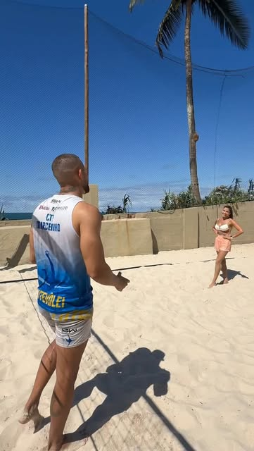
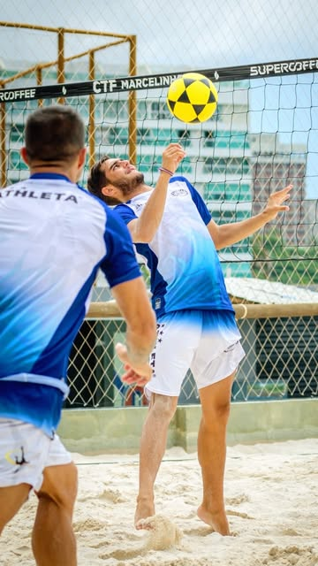
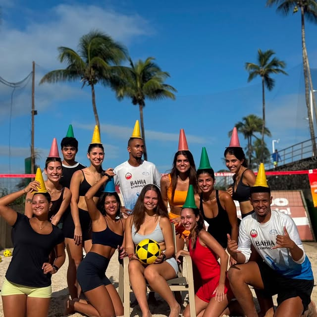
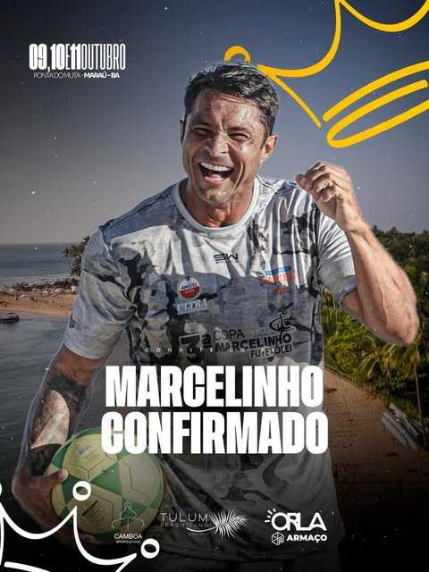
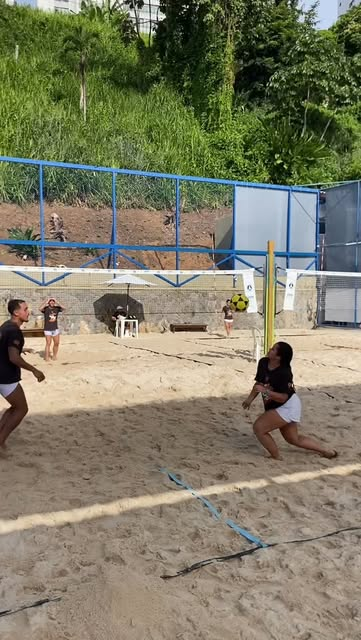
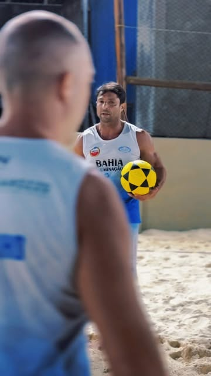
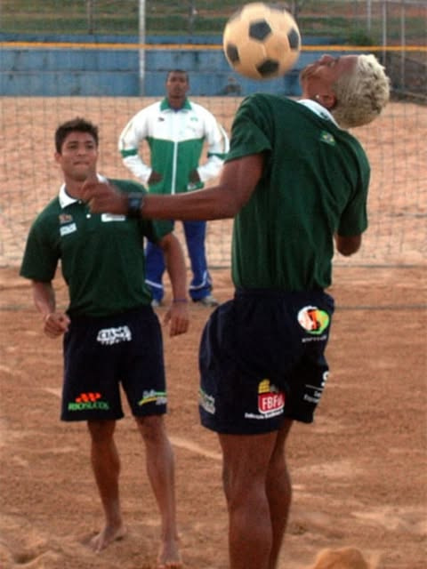

Vem treinarcom o penta.
O Prof. Marcelinho é 5 vezes campeão mundial e 10 vezes campeão brasileiro de futevôlei. Hoje ele passa a mesma metodologia para turmas de todos os níveis, na arena do Clube Espanhol.

Títulos
Saiu de Brasília como um dos melhores do mundo no futevôlei, ganhou o mundo na Europa e trouxe o que aprendeu para a areia de Salvador.
Ler a trajetória do pentaTreino padrão penta.
O mesmo jeito de treinar que levou cinco títulos mundiais, em quatro tempos por aula. Serve pra quem nunca encostou na bola e pra quem quer subir no ranking.
- 01
Fundamento primeiro
Domínio, passe e levantada até sair no automático. Tudo começa no toque.
- 02
Repetição com alvo
Cada exercício tem meta e contagem. Bater bola sem objetivo não é treino.
- 03
Jogo dirigido
Situação de jogo com regra. O professor trava exatamente o que você precisa corrigir.
- 04
Jogo valendo
No fim, placar. É ali que o fundamento vira ponto e a turma vira dupla.
#PentaMundialcomo ele assina as artes do CT
Tem turma pro seu jogo.
Do primeiro toque na bola ao ritmo de competição, e turma só para elas. Horários de exemplo confirme no WhatsApp antes de ir.

Agende sua aula experimental.
Preenche aqui e a mensagem já vai pronta pro WhatsApp do Prof. Marcelinho. Ele te responde com o dia e o horário.

Copa Marcelinho.
A copa do próprio CT já está na 3ª edição. Agora ela ganha página com inscrição de dupla, vagas por categoria e a tabela de jogos atualizada pelo professor durante o torneio.
O dia a dia do CT.
Fotos do Instagram @ctfmarcelinho e de quem marca o CT.






Arena do Clube Espanhol.
- Local
- Clube Espanhol · Salvador, BA
- WhatsApp do professor
- (71) 99173-5120
- @ctfmarcelinho